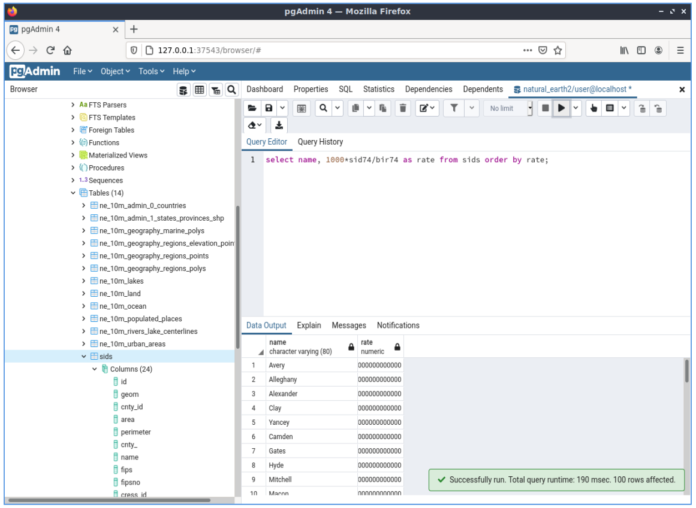

PostGIS gyorstalpaló¶
A PostGIS a PostgreSQL adatbázist térinformatikai képességekkel bővíti. Kiterjeszti PostgreSQL-t, mely így térbeli adatokat tud tárolni, lekérdezni és manipulálni. Ebben a gyorstalpalóban «PostgreSQL» -t használunk amikor az általános adatbázis funkciókat írjuk le és «PostGIS»-t, amikor a PostGIS által hozzáadott térbeli funkcionalitást.
Ez a gyorstalpaló leírja:
- Hogyan hozzunk létre és kérdezzünk le téradatbázist a parancssorból és a QGIS grafikus kliensből.
- Hogyan kezeljük az adatokat a pgAdmin kliensből.
Contents
- Kliens-szerver architektúra
- Téradatbázis létrehozása
- Téradat tábla létrehozása SQL használatával
- Egyszerű lekérdezések
- Térbeli lekérdezések
- Térkép
- Téradatok importálása az adatbázisba
- Ismerjük meg a pgAdmin III-t
- Egy SQL lekérdezés végrehajtása a pgAdmin III-ból
- Get to know Foreign Data Wrappers (FDW)
- Connect to a remote OGR data source via ogr_fdw
- Kipróbálandó dolgok
- Mi a következő?
Kliens-szerver architektúra¶
PostgreSQL, mint sok más adatbázis kliens-szerver rendszerként működik. A kliens egy kérést küld a szervernek és egy választ kap vissza. Ez ugyanaz a mód, ahogy az internet működik - a böngésző a kliens és a webszerver weblapokat küld vissza. A PostgreSQL esetén a kérések SQL nyelven készülnek és a válasz általában egy adattáblázat az adatbázisból.
Semmi sem akadályozza meg, hogy a szerver ugyanazon a számtógépen legyen mint a kliens, ez lehetővé teszi, hogy egy gépen használjuk a PostgreSQL-t. A kliense a belső «loopback» hálózati kapcsolaton keresztül kapcsolódik a szerverhez és más számítógépekről el sem érhető, hacsak nem konfigurálja úgy.
Téradatbázis létrehozása¶
A parancssori kliens a terminál emulátor ablakban fut.
Indítson egy terminál emulátort (LXTerminal ebben a verzióban) az Applications menüből az Accessories csoportból. Ez egy Unix burok parancs promptot ad. Írja be:
psql -V
és nyomja meg az entert, hogy lássa a PostgreSQL verziószámát.
Egyetlen PostgreSQL szerver lehetővé teszi a munkaszervezést az adatok külön adatbázisokba rendezésével. Minden egyes adatbázis egy önálló rendszer, saját táblákkal, nézet táblákkal, felhasználókkal és így tovább. Amikor csatlakozik egy PostgreSQL szerverhez meg kell adnia egy adatbázist.
A szerveren tárolt adatbázisok listáját a következő paranccsal kaphatja meg:
psql -l
Számos adatbázist láthat, melyeket valamely a rendszeren lévő projekt használ. Egy újat fogunk létrehozni ehhez a gyorstalpalóhoz.
Javaslat
A lista a standard unix lapkezelőt használja - szóköz a következő laphoz, b a visszalépéshez, q a kilépéshez, h a súgóhoz.
A PostgreSQL egy segédprogramot, createdb nyújt adatbázisok létrehozásához. Az adatbázist létre kell hozni mielőtt hozzáadnánk a PostGIS bővítményt. Az adatbázis neve legyen demo. Ezután a parancs:
createdb demo
Javaslat
A parancssori eszközökhöz általában segítséget kaphatunk a --help opcióval.
Ha most a psql -l parancsot futtatja, látnia kell a demo adatbázist a listában. Még nem adtuk hozzá a PostGIS bővítményt, de a következő részben megtanuljuk ezt.
A PostGIS adatbázist az SQL nyelv használatával hozhat létre. Először töröljük az éppen létrehozott adatbázist a dropdb parancs használatával, majd használja a psql parancsot, hogy egy SQL parancs értelmezőt kapjunk:
dropdb demo
psql -d postgres
Ez a postgres nevű alap rendszer adatbázishoz csatlakozik. Most írja be az SQL parancsot az adatbázis létrehozásához:
postgres=# CREATE DATABASE demo;
Most kapcsolódjunk a postgres adatbázisból az új demo adatbázishoz. A jövőben közvetlenül csatlakoztathat hozzá a psql -d demo paranccsal, de itt van egy ügyes lehetőség a váltásra a psql parancssorból:
postgres=# \c demo
Javaslat
Nyomjon CTRL + C-t, ha a psql prompt jelenik meg a return megnyomása után. Ez törli a korábbi inputot és újrakezdheti. Valószínűleg egy záró idézőjelre, pontosvesszőre vagy valami másra vár.
Egy információ üzenetet kellene látnia és a prompt megváltozik, hogy mutassa most a demo adatbázishoz csatlakozik.
Ezután adja hozzá a PostGIS bővítményt:
demo=# create extension postgis;
A PostGIS telepítés ellenőrzéséhez futtassa a következő lekérdezést:
demo=# SELECT postgis_version();
postgis_version
---------------------------------------
2.3 USE_GEOS=1 USE_PROJ=1 USE_STATS=1
(1 row)
A PostGIS sok függvényt, egy táblát és több nézet táblát telepít.
Az adatbázisban lévő táblák listájához írja be a \dt parancsot. Valami hasonlót kellene látnia mint ez:
demo=# \dt
List of relations
Schema | Name | Type | Owner
--------+------------------+-------+-------
public | spatial_ref_sys | table | user
(1 row)
A PostGIS a spatial_ref_sys táblát a különböző vetületi rendszerek közötti transzformációnál használja. A spatial_ref_sys tábla a vetületekről tárol információkat és az SQL használhatjuk, hogy gyorsan belenézzünk:
demo=# SELECT srid, auth_name, proj4text FROM spatial_ref_sys LIMIT 10;
srid | auth_name | proj4text
------+-----------+--------------------------------------
3819 | EPSG | +proj=longlat +ellps=bessel +towgs...
3821 | EPSG | +proj=longlat +ellps=aust_SA +no_d...
3824 | EPSG | +proj=longlat +ellps=GRS80 +towgs8...
3889 | EPSG | +proj=longlat +ellps=GRS80 +towgs8...
3906 | EPSG | +proj=longlat +ellps=bessel +no_de...
4001 | EPSG | +proj=longlat +ellps=airy +no_defs...
4002 | EPSG | +proj=longlat +a=6377340.189 +b=63...
4003 | EPSG | +proj=longlat +ellps=aust_SA +no_d...
4004 | EPSG | +proj=longlat +ellps=bessel +no_de...
4005 | EPSG | +proj=longlat +a=6377492.018 +b=63...
(10 rows)
Ez igazolja, hogy téradatbázisunk van.
E tábla mellett több nézet táblát találhat, melyek a postgis engedélyezése során jöttek létre.
Írja be a \dv parancsot az adatbázisban található nézet táblák listájához. Valami ilyesmit kellene látnia:
demo=# \dv
List of relations
Schema | Name | Type | Owner
--------+-------------------+------+----------
public | geography_columns | view | postgres
public | geometry_columns | view | postgres
public | raster_columns | view | postgres
public | raster_overviews | view | postgres
(4 rows)
A PostGIS számos téradat típus támogat:
geometry - egy olyan adattípus, mely az adatokat egy síkon ábrázolt vektorrajzként tárolja
geography - egy olyan adattípus, mely az adatokat egy gömbön ábrázolt vektorrajzként tárolja
- raster - egy olyan adattípus, mely az adatokat n-dimenziós mátrixként tárolja, ahol minden pozíció (pixel) egy területet reprezentál
- a térben és minden sáv (dimenzió) egy értékkel rendelkezik az egyes pixelekre.
A geometry_columns, geography_columns és raster_columns nézettáblák feladat, hogy a PostGIS felé jelezzék mely táblákban van geometry, geography és raster oszlopokat.
Az overview-ek kisebb felbontású táblák a raszter adatokhoz. A raster_overviews tartalmazza a táblákat, a raszter oszlopokat és a táblákat, melyhez az áttekintők tartoznak.A raszter áttekintő táblákat olyan eszközök használják mint például a QGIS, hogy a kisebb felbontású raszter adatokat gyorsabban töltsék be.
A PostGIS geometry típus az első és még most is a legnépszerűbb típus melyet a PostGIS felhasználók használnak. A figyelmünket erre a típusra fókuszáljuk.
Téradat tábla létrehozása SQL használatával¶
Most hogy van a téradatbázisunk létrehozhatunk néhány térbeli táblát.
Először hozzunk létre egy közönséges adatbázis táblát város adatok tárolásához. Ez a tábla három mezőt tartalmaz - egyet a város azonosító számának. egyet a városnévnek és egy másikat a geometry oszlophoz:
demo=# CREATE TABLE cities ( id int4 primary key, name varchar(50), geom geometry(POINT,4326) );
Hagyományosan a geometria oszlopot geom-nak nevezzük (a korábbi PostGIS konvenció a the_geom volt). Ez megadja a PostGIS-nek milyen típusú geometria tartozik az egyes elemekhez (pontok, törtvonalak, területek, stb.), hány dimenziósak (ebben az esetben 2, 3 vagy 4 dimenzióhoz a POINZ, POINTM vagy POINTZM kell használni) és megadja a vetületet. EPSG:4326 koordinátákat használunk a városokhoz.
Ha most ellenőrzi a cities táblát, láthatja az új oszlopot és azt az információt, hogy tábla aktuálisan egy sort sem tartalmaz.
demo=# SELECT * from cities;
id | name | geom
----+------+----------
(0 rows)
A sorok hozzáadásához SQL mondatokat fogunk használni. A geometry oszlop feltöltéséhez a PostGIS az ST_GeomFromText függvényét fogjuk használni, hogy a koordinátákat és a vetület azonosítót tartalmazó szöveges formátumból konvertáljuk:
demo=# INSERT INTO cities (id, geom, name) VALUES (1,ST_GeomFromText('POINT(-0.1257 51.508)',4326),'London, England');
demo=# INSERT INTO cities (id, geom, name) VALUES (2,ST_GeomFromText('POINT(-81.233 42.983)',4326),'London, Ontario');
demo=# INSERT INTO cities (id, geom, name) VALUES (3,ST_GeomFromText('POINT(27.91162491 -33.01529)',4326),'East London,SA');
Javaslat
Használja a nyíl billentyűket korábbi parancsok elővételéhez és szerkesztéséhez.
Amint látja, ez nagyon gyorsan unalmassá válik. Szerencsére vannak más, sokkal könnyebb módszerek az adatok PostGIS táblákba juttatására. De most már van három város az adatbázisunkban, és dolgozhatunk azokkal.
Egyszerű lekérdezések¶
Az összes szokásos SQL-művelet alkalmazható a PostGIS táblából származó adatok kiolvasásához:
demo=# SELECT * FROM cities;
id | name | geom
----+-----------------+----------------------------------------------------
1 | London, England | 0101000020E6100000BBB88D06F016C0BF1B2FDD2406C14940
2 | London, Ontario | 0101000020E6100000F4FDD478E94E54C0E7FBA9F1D27D4540
3 | East London,SA | 0101000020E610000040AB064060E93B4059FAD005F58140C0
(3 rows)
Ez a koordináták kódolt hexadecimális változatát adja nekünk, nem túl hasznos az embereknek.
Ha újra WKT formátumban szeretne egy pillantást vetni a geometriára, akkor az ST_AsText(geom), vagy az ST_AsEwkt(geom) függvényeket használhatja. Az ST_X(geom), az ST_Y(geom) függvényeket is használhatja a koordináták numerikus értékének kiolvasásához:
demo=# SELECT id, ST_AsText(geom), ST_AsEwkt(geom), ST_X(geom), ST_Y(geom) FROM cities;
id | st_astext | st_asewkt | st_x | st_y
----+------------------------------+----------------------------------------+-------------+-----------
1 | POINT(-0.1257 51.508) | SRID=4326;POINT(-0.1257 51.508) | -0.1257 | 51.508
2 | POINT(-81.233 42.983) | SRID=4326;POINT(-81.233 42.983) | -81.233 | 42.983
3 | POINT(27.91162491 -33.01529) | SRID=4326;POINT(27.91162491 -33.01529) | 27.91162491 | -33.01529
(3 rows)
Térbeli lekérdezések¶
A PostGIS sok térbeli funkcionalitással rendelkező függvényt ad a PostgreSQL-hez. Már láttuk a ST_GeomFromText, mely WKT formátumátumot alakítja át geometriává. A legtöbb közülük ST-vel (a térbeli típus) kezdődik, és a PostGIS dokumentáció egy fejezete sorolja fel őket. Most használjunk egyet egy gyakorlati kérdés megválaszolására - milyen messze van ez a három London egymástól méterben, feltételezve, hogy a föld gömb alakú?
demo=# SELECT p1.name,p2.name,ST_DistanceSphere(p1.geom,p2.geom) FROM cities AS p1, cities AS p2 WHERE p1.id > p2.id;
name | name | st_distancesphere
-----------------+-----------------+--------------------
London, Ontario | London, England | 5875766.85191657
East London,SA | London, England | 9789646.96784908
East London,SA | London, Ontario | 13892160.9525778
(3 rows)
Ez méterben adja meg a távolságot minden város pár között. Nézze meg a «WHERE» részét a sornak, hogyan akadályozza meg, hogy a város távolságát önmagától (ami mind nulla lenne) és a visszafelé távolságot (London, England-ből a távolság London, Ontario-ba ugyanaz mint London, Ontario-ból London, England-be) is megkapjuk. Próbálja ki a WHERE rész nélkül és nézze meg mi történik.
Egy másik függvény segítségével a távolságot kiszámíthatjuk egy ellipszoidon is, ha megadjuk az ellipszoid nevét, a fél nagytengelyét és a lapultságát:
demo=# SELECT p1.name,p2.name,ST_DistanceSpheroid(
p1.geom,p2.geom, 'SPHEROID["GRS_1980",6378137,298.257222]'
)
FROM cities AS p1, cities AS p2 WHERE p1.id > p2.id;
name | name | st_distancespheroid
-----------------+-----------------+----------------------
London, Ontario | London, England | 5892413.63776489
East London,SA | London, England | 9756842.65711931
East London,SA | London, Ontario | 13884149.4140698
(3 rows)
A PostgreSQL parancssorból kilépéshez írja be:
\q
Most visszatért a rendszer konzolhoz:
user@osgeolive:~$
Térkép¶
Az adatokat fogadni képes kliens szükséges a PostGIS adatokból térkép készítéshez. A legtöbb nyílt forráskódú asztali GIS meg tudja csinálni ezt - például a QGIS, a gvSIG, a uDIG. Most megmutatjuk hogyan készíthet térképet a QGIS-ből
Indítsa el a QGIS-t a Desktop GIS menüből és válassza az Add PostGIS layers-t (PostGIS réteg hozzáadás) a Layer (Réteg) menüből. A PostGIS-ban tárolt Natural Earth adatokhoz kapcsolódás paramétereit már beállítottuk a Connections (Kapcsolatok) legördülő listában. Itt új szerver kapcsolatokat adhat meg és tárolhatja a beállításokat a könnyű újrafelhasználáshoz. Kattintson a Connections (Kapcsolatok) legördülő listára és válassza a Natural Earth-t.Kattintson az Edit (Szerkeszt) gombra, ha meg akarja tekinteni a Natural Earth-höz tartozó paramétereket vagy egyszerűen kattintson a Connect-re (Kapcsolódás) gombra a folytatáshoz:

Az adatbázisban lévő téradat táblák listáját kapja meg:

Válassza az ne_10m_lake táblát és kattintson az Add (Hozzáad) gombra alul (ne a Load-ra (Betölt) felül - az az adatbázis paramétereket tölti be) és ezzel betöltjük a QGIS-be:

A tavak térképét kellene látnia a QGIS-ben. A QGIS nem tudja, hogy ezek tavak, így lehet hogy nem kékre színezi azokat - deritse ki a QGIS dokumentációból, hogyan változtathatja meg a színt. Nagyítson rá a kanadai tavak egy híres csoportjára.
Téradatok importálása az adatbázisba¶
A legtöbb OSGeo asztali eszközben van más formátumú téradatok fájlból (például ESRI shape) importálás funkciója az adatbázisba. Ismét a QGIS használjuk ennek bemutatására.
A QGIS-ben a shape fájlok importálását a praktikus QGIS Database Manager (QGIS adatbázis-kezelő) segítségével tehetjük meg. A menüben találja meg a kezelőt. Menjen a menüben ide Database -> DB Manager -> DB Manager (Adatbázis->DB kezelő->DB kezelő).
Bontsa szét a PostGIS elemet, majd a NaturalEarth elemet. Ezután kapcsolódik a Natural Earth adatbázishoz. Hagyja üresen a jelszót, ha kérdezik. A public elemben az adatbázis által szolgáltatott rétegek listája van. A fő kezelő ablakot látja. A bal oldalon az adatbázisból választhat egy táblát és használja a füleket a jobb oldalon, hogy megtudjon valamit róluk. A Preview (Előnézet) fül egy kis térképet mutat.

Most a DB manager-t használjuk egy shape fájl adatbázisba importálásához. Az észak karolinai hirtelen csecsemőhalál-szindróma adatokat fogjuk használni, melyeket az egyik R statisztikai csomag bővítmény tartalmaz.
A Table menüből válassza az Import layer/file opciót. Kattintson a ... gombra és tallózzon a sids.shp shape fájlhoz az R maptools csomagban (a /usr/local/lib/R/site-library/spData/shapes mappában):

Hagyjon minden mást változatlanul és kattintson a Load-ra

Hagyja a vetületi rendszer kiválasztását az alapértelmezetten (WGS 84 EPSG:4326) és kattintson az OK-ra. A shape fájlt hiba nélkül kellene importálnia a rendszernek. Zárja be a PostGIS kezelőt és térjen vissza a QGIS fő ablakhoz.
Most töltse be az SIDS adatokat a térképre az «Add PostGIS Layer» opcióval. A rétegek egy kis átrendezésével és némi színezéssel képes lehet a következő kartogram létrehozására a hirtelen csecsemőhalál-szindróma számokból (sid74 vagy sid79 mező) Észak-Carolina-ban:

Ismerjük meg a pgAdmin III-t¶
Használhatja a pgAdmin III grafikus adatbázist klienst a Databeses menüből a nem térbeli adatok lekérdezéséhez és módosításához. Ez a hivatalos kliens a PostgreSQL-hez.
Javaslat
Vegye figyelembe, hogy a pgAdmin-nak van új verziója a pgAdmin4, melyet az apt install pgadmin4 paranccsal telepíthet
A pgAdmin III lehetővé teszi az adattábláinak kezelését az SQL használatával. A Databases mappában találja és indíthatja a pgAdmin III-at.

Itt lehetősége van új kapcsolat létrehozására egy PostgreSQL szerverhez vagy kapcsolódhat egy már ismert szerverhez. Esetünkben az előre definiált local szerverhez fogunk kapcsolódni.
A kapcsolat létrejötte után láthatja a rendszerben már meglévő adatbázisok listáját.

A piros „X” a legtöbb adatbázis előtti képen azt jelenti, hogy még nem kapcsolódott egyikhez sem (csak az alapértelmezett postgres adatbázishoz kapcsolódik). Ezen a ponton csak a létező adatbázisokat látja a rendszerben. Az adatbázis nevére duplán kattintva kapcsolódhat ahhoz. Tegye ezt a natural_earth2 adatbázisra.
Most azt láthatja, hogy a piros X eltűnt és egy „+” jelent meg balra. Ezt megnyomva egy fa jelenik meg mely az adatbázis tartalmát mutatja.
Navigáljon a schemas részfára és nyissa szét. Ezután nyissa szét a public sémát. A Tables-re navgálva és szétnyitva láthatja az összes táblát ebben a sémában.

Egy SQL lekérdezés végrehajtása a pgAdmin III-ból¶
A pgAdmin biztosítja lekérdezések végrehajtásának lehetőségét a relációs adatbázisból.
Az adatbázison történő lekérdezés végrehajtásához nyomja meg az SQL gombot a fő eszközsorból (a sárga nagyítólencsét tartalmazóból).
Az SIDS arányát keressük a születésekhez minden városban 1974-ben. Továbbá rendezzük az eredményt a számított arányok alapján. Ehhez a következő lekérdezést kell végrehajtanunk (küldje el ezt az SQL ablak szövegszerkesztőjéből):
select name, 1000*sid74/bir74 as rate from sids order by rate;
Ezután meg kell nyomnia a jobbra mutató zöld nyíl gombot (lekérdezés végrehajtása).
{kind=link}
Get to know Foreign Data Wrappers (FDW)¶
From you database you can access remote objects like tables from other PostgreSQL databases or connect to remote databases like Oracle, MySQL, MS SQL or CouchDB. You also can connect via ODBC, connect to CSV, Geospatial Data and even to twitter.
You find a list of different FDW at:
Let’s see how it works! The easiest way is to connect to a different PostgreSQL database.
Here are the steps:
First load the extension for the Foreign Data Wrapper that you want to use. For a connection to a different PostgreSQL database you need postgres_fdw
CREATE EXTENSION postgres_fdw;
Javaslat
Please note that in pgAdmin III the foreign data wrappers, foreign servers, user mappings and foreign tables are not displayed by default in the tree. You have to activate them via menu via
Create a foreign Server that tells you where to find the data source that you want to connect
CREATE SERVER fdw_pg_server_osm_local
FOREIGN DATA WRAPPER postgres_fdw
OPTIONS (host '127.0.0.1', port '5432', dbname 'osm_local');
Define the user that should be used when you connect to the foreign server
CREATE USER MAPPING FOR user
SERVER fdw_pg_server_osm_local
OPTIONS (user 'user', password 'user');
Now you can create a foreign table.
IMPORT FOREIGN SCHEMA public
LIMIT TO (planet_osm_polygon, planet_osm_point) -- or EXCEPT
FROM SERVER fdw_pg_server_osm_local
INTO public;
Find new tables in your database and have a look at the data from a foreign table.
Select * from planet_osm_polygon limit 10;
Connect to a remote OGR data source via ogr_fdw¶
The extension ogr_fdw allows connection too several geodata formats like KML,
GeoPackage, WFS, GeoJSON, GPX, GML and more.
Read more about ogr_fdw:
* Repository: https://github.com/pramsey/pgsql-ogr-fdw
* New and improved: http://blog.cleverelephant.ca/2016/04/ogr-fdw-update.html
Install the extension ogr_fdw in your database.
On the database prompt type:
CREATE EXTENSION ogr_fdw;
Inspect which formats are supported:
Open a terminal and search for ogr_fdw_info:
locate ogr_fdw_info
/usr/lib/postgresql/10/bin/ogr_fdw_info -f
Results might look like these:
Supported Formats:
-> "OGR_GRASS" (readonly)
-> "PCIDSK" (read/write)
-> "netCDF" (read/write)
-> "JP2OpenJPEG" (readonly)
-> "PDF" (read/write)
-> "MBTiles" (read/write)
-> "EEDA" (readonly)
-> "ESRI Shapefile" (read/write)
-> "MapInfo File" (read/write)
.... many more
Create a FDW to a WFS
Start Geoserver via
- Open GeoServer http://localhost:8082/geoserver/web/
- GeoServer WFS GetCapabilities http://localhost:8082/geoserver/ows?service=wfs&version=2.0.0&request=GetCapabilities
- GeoServer WFS DescribeFeatureType for topp:states http://localhost:8082/geoserver/ows?service=wfs&version=2.0.0&request=DescribeFeatureType&typename=topp:states
- GeoServer WFS GetFeature topp:states http://localhost:8082/geoserver/ows?service=wfs&version=2.0.0&request=GetFeature&typename=topp:states
Create a foreign server that refers to the WFS that you want to connect
CREATE SERVER fdw_ogr_server_wfs
FOREIGN DATA WRAPPER ogr_fdw
OPTIONS ( datasource 'WFS:http://localhost:8082/geoserver/ows', format 'WFS' );
Import all WFS feature_types as foreign tables with one command.
After the import you will see several new foreign tables in your schema.
IMPORT FOREIGN SCHEMA ogr_all
FROM SERVER fdw_ogr_server_wfs
INTO public;
Inspect the foreign data table topp_states:
SELECT * FROM topp_states WHERE state_name = 'Minnesota';
Kipróbálandó dolgok¶
Íme néhány további kipróbálandó kihívás önnek:
- Próbáljon ki néhány további térbeli függvényt, mint
st_buffer(geom),st_transform(geom,25831),st_x(geom)- a teljes dokumentációt a http://postgis.net/documentation/ oldalon találja meg. - Exportálja a tábláit shape fájlba a parancssorból a
pgsql2shp-val - Próbálja ki az adatok importálását/exportálását az adatbázisába a parancssorból a
ogr2ogr-el. - Próbálja ki az adatok importálását az adatbázisba a parancssorból a
shp2pgsql-el. - Próbálja ki az útvonal tervezést a pgRouting segítségével.
Mi a következő?¶
Ez csak az első lépés az úton a PostGIS használatához. Sokkal szélesebb a funkcionalitása amit kipróbálhat.
- PostGIS Projekt honlap - http://postgis.net
- PostGIS Dokumentáció - http://postgis.net/documentation/